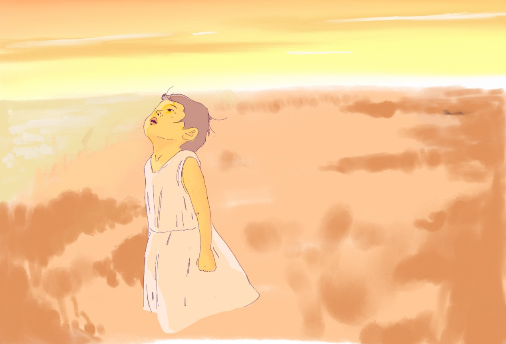

Have you ever seen a broad sunset and felt the world so free and wide?
I wanted to capture that wide space with an expansive field and sky. This drawing really was an exercise in pushing my paintings past a sketching point. Previously I would be satisfied with this version:
but this time, at each point which I thought I could be done, I asked, "What more could I add to this image?"
Side note: while I was drawing, I heard shots outside. It freaked me out, because I thought for a second they were gunshots. It turned out they were fireworks...because the clock had struck 12! The new year had rung in!
It's not a bad way to start the new year, drawing :)